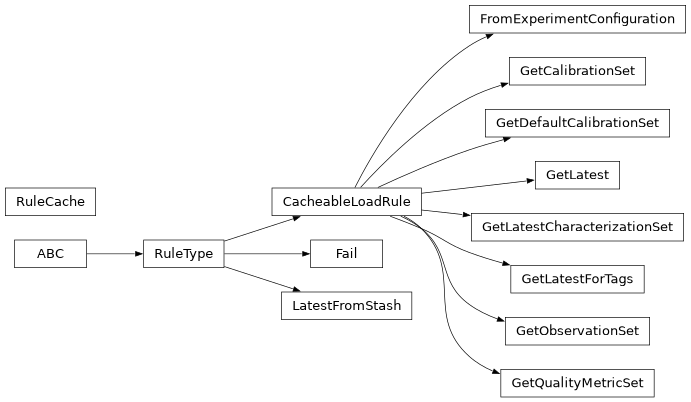

observation_loading_rules#
Full path: iqm.cpc.core.observation.observation_loading_rules
Loading rule interfaces and base classes.
Module Attributes
Represents cached data for a single CacheableLoadRule subclass. |
|
Function for loading |
|
Source for settings that get their values from the EXA configuration YML. |
Functions
|
Resolves the rules related to loading and fall back one by one. |
Classes
Interface for an observation loading rule for which the observation data can be preloaded to a cache. |
|
Terminates rule application chain on error. |
|
Load observations from |
|
Get the observations of a specific calibration set, or the current default one. |
|
Get the observations for the default calibration set. |
|
Get the latest observation. |
|
Get the observations for the latest finalized characterization set. |
|
Get the latest observation for a given list of tags. |
|
Get the observations for a given observation set. |
|
Get the observations of a specific calibration set's latest quality metric set. |
|
Load rule that gets the observation from the local stash. |
|
Stores cached observation values for the CacheableLoadingRule subclasses. |
|
Base class for observation loading rules. |
Inheritance
